Parking in Spain doesn't have to be complicated. Yet many drivers—especially tourists and expats—struggle to interpret Spanish parking signs and markings, leading to unexpected fines and penalties. From yellow lines to blue zones, restricted areas to day-specific prohibitions, understanding the rules can save you money and frustration.
This guide decodes every parking sign and restriction you'll encounter on Spanish roads. Whether you're a resident, a visitor, or a regular commuter, you'll learn what each marking means, where you can (and can't) park, and how to avoid costly fines across Spain's regions.
Key Takeaways
- Single yellow lines indicate time-restricted parking; yellow curbs mean no parking at any time
- Blue zones (zonas azules) require payment and display of parking tickets; typical fines range from fines for violations
- Green zones (zonas verdes) prioritize resident parking; non-residents may incur fees
- Spain's basic parking rules are uniform nationwide, but municipalities add local variations—always check signage
- Parking violations can result in fines of fines depending on severity; unpaid fines may prevent vehicle registration renewal
Understanding Yellow Lines: Time-Restricted Parking in Spain
Yellow lines (líneas amarillas) are Spain's primary method of indicating parking restrictions. Unlike some countries, Spanish yellow lines are time-dependent—the accompanying sign shows when restrictions apply. Understanding the difference between single and yellow curb markings is essential to avoiding unnecessary fines.
The key distinction: a single yellow line allows parking outside the hours indicated on the sign, while a yellow curb means no parking at any time, period. Many parking violations in Spain result from misinterpreting this simple but crucial difference.
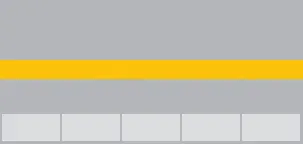
Single Yellow Line (Línea Amarilla Simple)
Indicates restricted parking during times shown on the adjacent sign. Parking is permitted outside those hours.
- Check the sign for time restrictions (usually 8am-9pm)
- No loading/unloading during restricted hours
- Parking is free outside restricted times
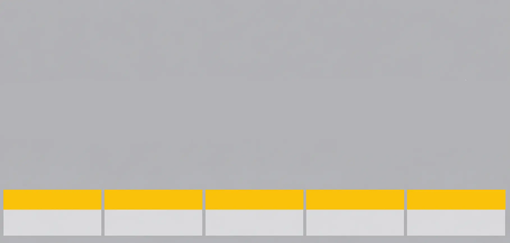
Yellow Curb (Línea Amarilla Continua / VADO)
No parking allowed at any time. Yellow curbs mark permanent restrictions—typically driveways, fire hydrants, or essential access zones.
- No parking, ever
- No stopping for any reason
- Vehicles parked here will be towed
Fine: fines
Colored Zones: Blue Zones & Green Zones Explained
Beyond colored lines, Spanish cities use a system of colored zones to manage parking in urban centers. These zones have distinct rules and fee structures designed to control parking demand and prioritize resident access.
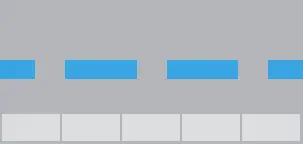
Blue Zone (Zona Azul)
Limited-stay parking requiring payment and display of parking ticket. Common in city centers and commercial areas.
- Maximum stay: 1-2 hours (varies by municipality)
- Hours: Usually Mon-Fri 9am-8pm, Sat 9am-2pm
- Cost: €0.50-€2 per hour
- Must display parking ticket on windshield
Fine: fines for non-payment or overstay
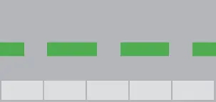
Green Zone (Zona Verde)
Resident priority parking. Residents can park free with a permit; non-residents must pay or apply for a guest permit.
- Residents: Free parking with valid permit
- Non-residents: Pay-and-display (€0.50-€1.50/hour) or forbidden
- Guest permits: Available for temporary stays
Fine: fines for non-residents or expired permits
Prohibition Signs: Red Signs & Special Markings
Spanish traffic regulations use a system of red circular signs with blue symbols to indicate absolute parking and stopping prohibitions. These signs are standardized across Spain and take priority over all other markings.
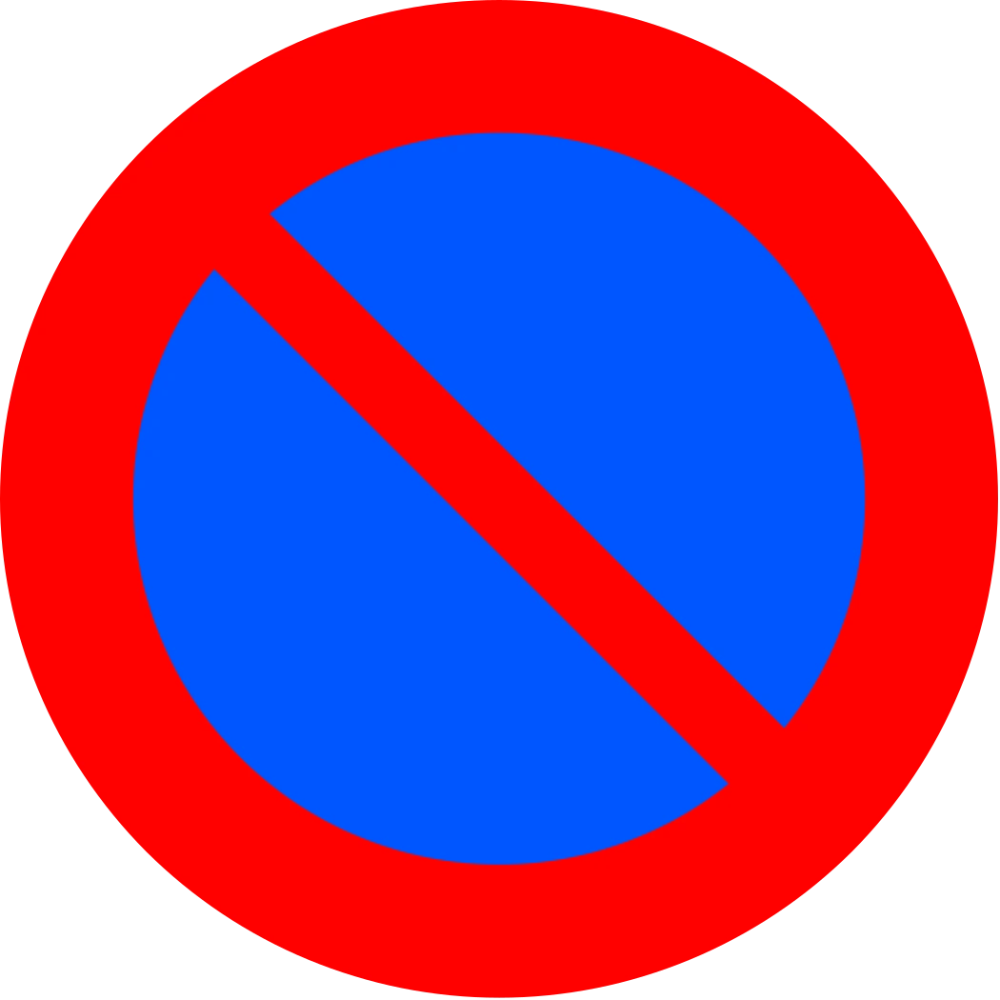
Parking Prohibited (Prohibido Aparcar)
Red circle with blue X—absolute prohibition on parking. No exceptions under normal circumstances.
- Emergency situations only (ambulance, fire truck)
- Official vehicles on duty
- Disabled permit holders (in some municipalities)
Fine: fines
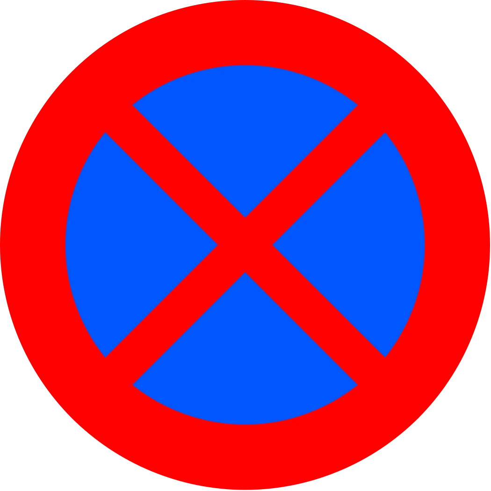
No Stopping and Parking (Prohibido Parar y Aparcar)
Red circle with double blue X—no stopping or parking at any time for any reason.
Fine: fines
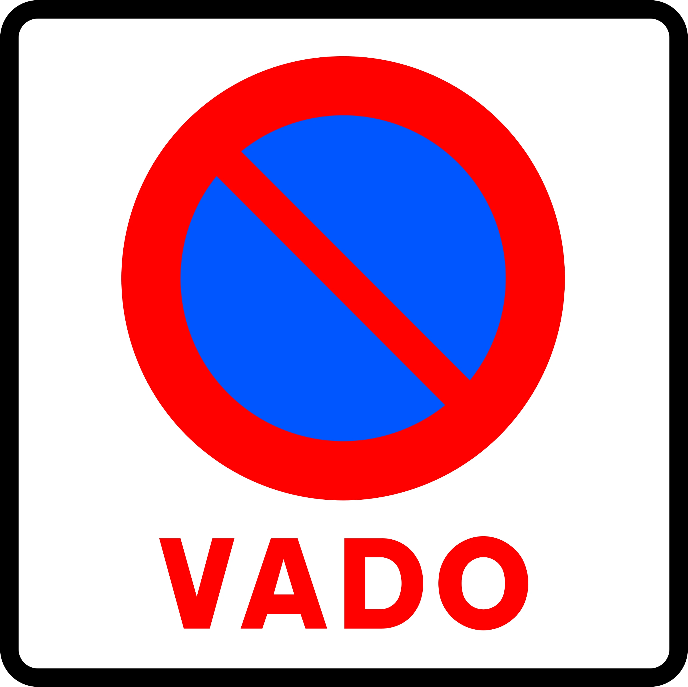
No Parking on Driveway (VADO)
Indicates a private driveway entrance. Parking here blocks vehicle access and will result in immediate towing.
- Private entrances are sacred in Spain
- No warning before towing
- You'll pay towing + storage fees (fines)
Fine + Tow: fines (plus fines towing)
Time-Limited & Special Parking Signs
Spanish municipalities use day-specific and time-specific signs to manage parking rotation and prevent long-term occupancy. These signs can be confusing for unfamiliar drivers but are crucial to understand.
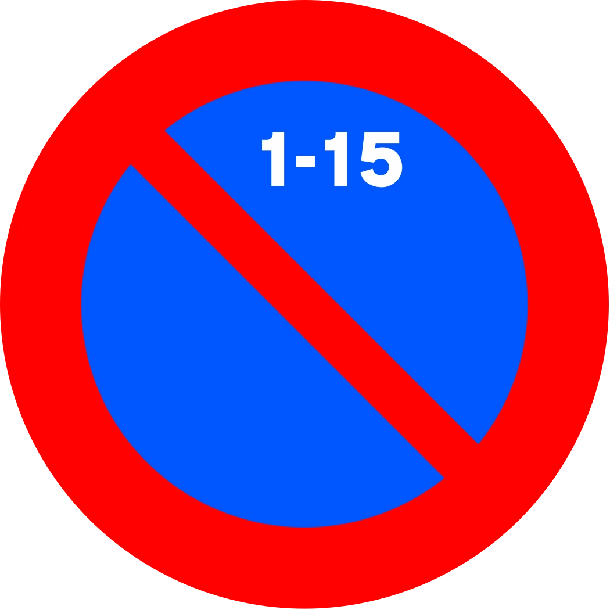
No Parking Days 1-15
Prohibits parking during the first half of the month (days 1-15). Drivers must relocate on the 16th.
Fine: fines
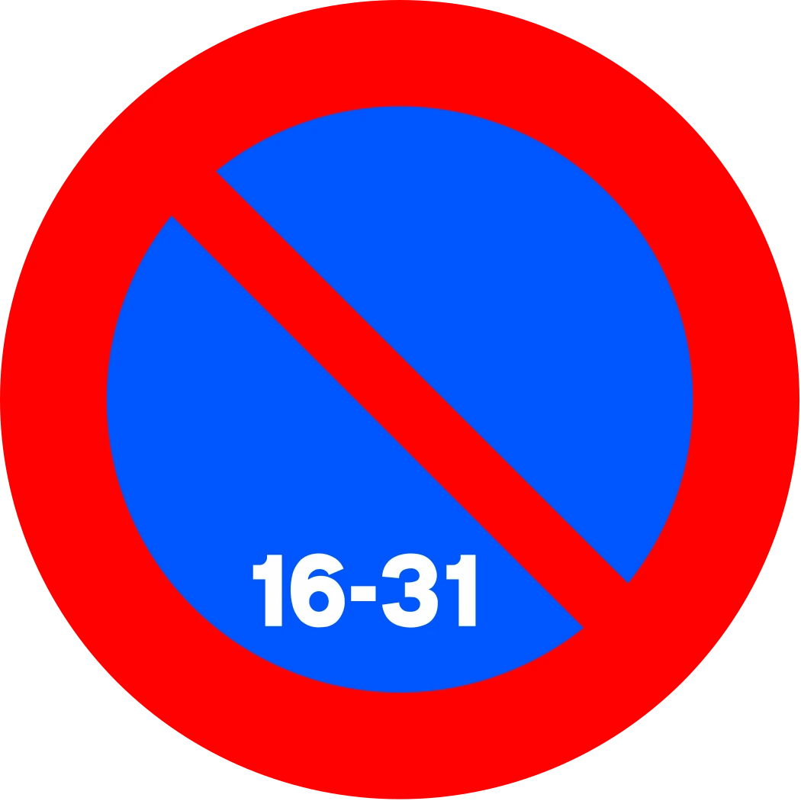
No Parking Days 16-31
Prohibits parking during the second half of the month (days 16-31). Drivers must relocate on the 1st.
Fine: fines
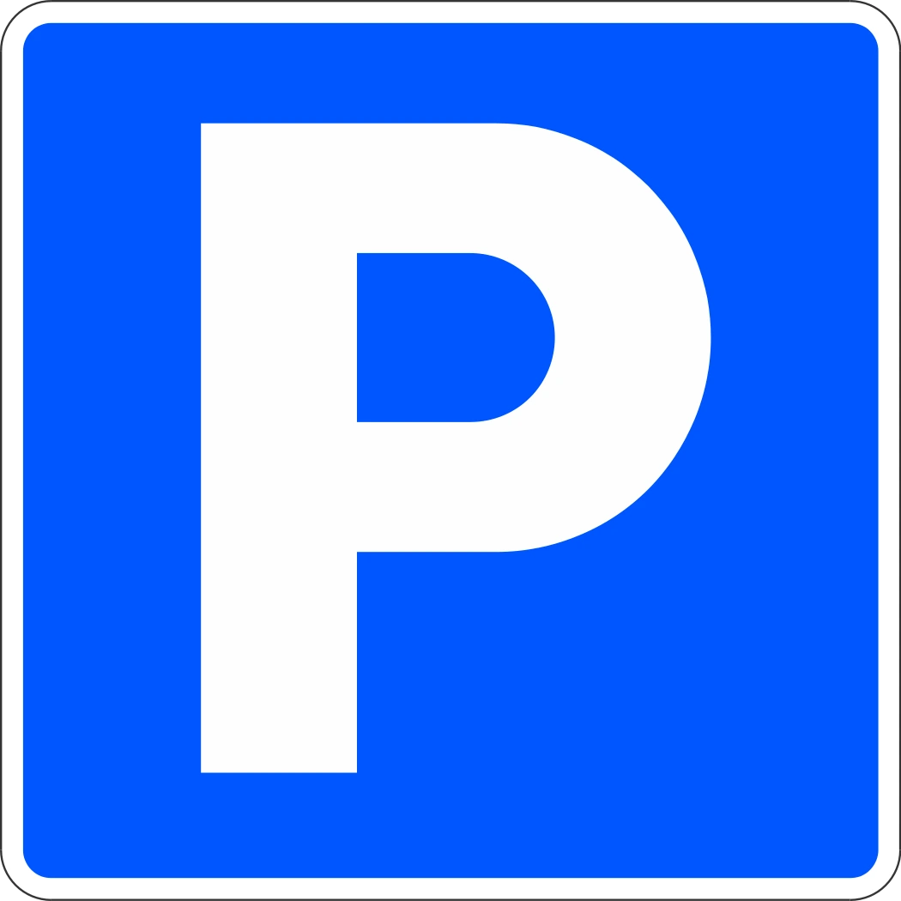
Parking Zone (P)
Blue square sign with white "P" indicates the start of a parking zone—typically a paid parking area with specific rules.
- Check supplementary signs for hours and fees
- Display parking ticket if required
- Observe any time limits posted
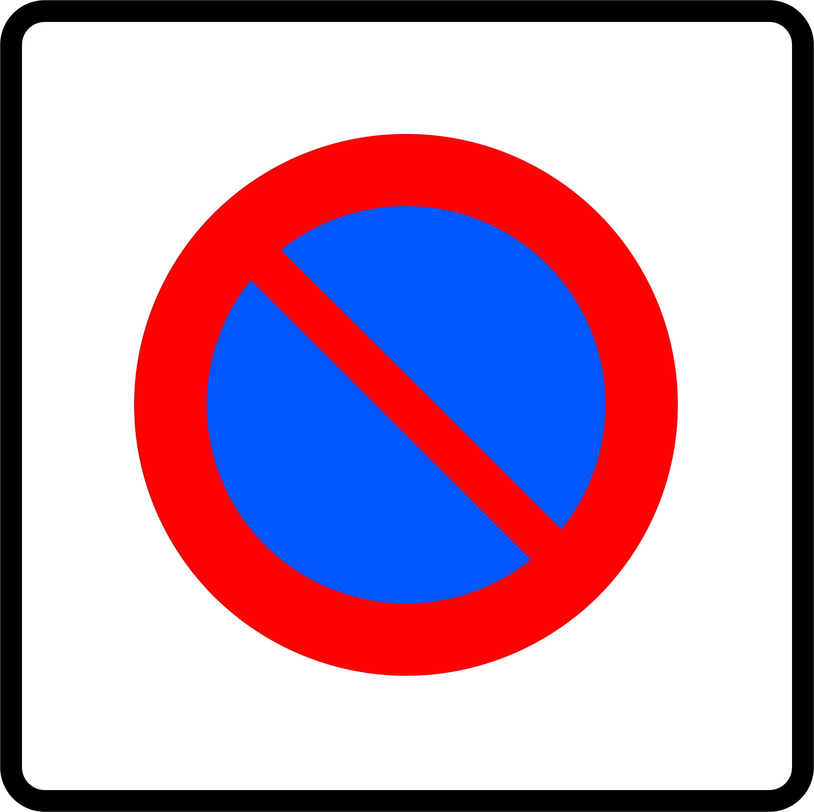
Restricted Parking Zone (Zona de Tráfico Limitado)
Red circle with blue X in a white box—indicates areas with reduced access (often for residents only, delivery vehicles, or at specific times).
Fine: fines
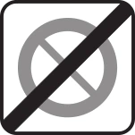
End of Restricted Parking Zone
White sign with diagonal line through "P" indicates the end of a restricted parking zone (zona de tráfico limitado). Normal parking rules resume after this sign.
Parking Fines & Penalties in Spain
Spanish parking fines (multas de tráfico) are standardized nationwide but vary by violation severity. Fines are administered by municipal authorities, and payment deadlines are strictly enforced. Unpaid fines can escalate and prevent vehicle registration renewal.
Standard Parking Fine Structure
| Violation Type | Base Fine | Payment Deadline | Early Payment Discount |
|---|---|---|---|
| Overstaying blue zone / no ticket displayed | fines | 30 days | a discount if paid within 10 days |
| Single yellow line violation | fines | 30 days | a discount early payment |
| Yellow curb / VADO parking | fines | 30 days | a discount early payment |
| Parking prohibited zone (red sign) | fines | 30 days | a discount early payment |
| Green zone / resident-only without permit | fines | 30 days | a discount early payment |
| Blocking driveway (VADO) | fines + towing | 30 days | a discount early payment (excludes towing) |
What Happens If You Ignore a Fine?
Ignoring a parking fine in Spain escalates the situation quickly:
- Days 1-30: You have 30 days to pay at the base fine amount (a discount discount if paid within 10 days)
- Days 31-60: Fine increases by a discount if unpaid (administrative escalation)
- Days 61+: The municipality can escalate to debt collection or legal proceedings
- Legal consequences: Unpaid fines prevent vehicle registration renewal, license renewal, and can result in legal action
Common Parking Mistakes & How to Avoid Them
Mistake 1: Misinterpreting Single Yellow Lines
Why it happens: Drivers assume yellow lines mean no parking, period. In reality, single yellow lines allow parking outside restricted hours.
How to avoid it: Always read the supplementary sign. If it says "9am-8pm Mon-Fri," you can park outside those hours for free.
Mistake 2: Not Displaying a Parking Ticket in Blue Zones
Why it happens: Drivers pay but forget to display the ticket or lose it while running errands.
How to avoid it: Place the ticket visibly on your dashboard before leaving the vehicle. Without proof of payment, you'll be fined.
Mistake 3: Parking on Day 15/16 Boundaries
Why it happens: Drivers don't track the calendar and forget alternating day restrictions or park late on the 15th/1st.
How to avoid it: Mark your calendar or set phone reminders for the 15th and 1st of each month in areas with alternating restrictions.
Mistake 4: Ignoring Yellow Curb (VADO) Markings
Why it happens: Drivers assume a yellow curb is just a yellow line—it's not. Yellow curbs are absolute prohibitions.
How to avoid it: Learn the difference: solid yellow = never; dashed yellow = restricted times. When in doubt, don't park.
Mistake 5: Parking in Resident-Only Zones Without a Permit
Why it happens: Visitors and non-residents don't realize green zones prioritize residents and charge for non-resident access.
How to avoid it: Check for green zone signage. If you see it, look for supplementary signs indicating visitor rates or apply for a guest permit.
How Curb Helps You Park with Confidence
Understanding parking rules is crucial, but applying them correctly in the moment is where drivers struggle. Spanish parking signs can be ambiguous, partially obscured, contradictory, or difficult to interpret if you're not fluent in traffic regulation symbols. You're standing on the street reading a confusing sign combination while traffic builds up—and you're not sure if parking here will cost you €20 or €200.
That's where Curb comes in.
Curb's AI-powered parking sign analysis instantly scans any parking sign and tells you exactly what the rules are:
- What time restrictions apply
- Whether parking is allowed right now
- What the fine is if you violate the rule
- Whether you need a permit or must pay
- How long you can stay
Instead of guessing, you get a clear verdict in seconds: "You can park here for 2 hours. Display your ticket. You're OK right now." Or: "This is a resident-only zone. Don't park here without a permit."
For drivers navigating Spanish streets, visiting new cities, or managing the complex variation in local rules, Curb removes the guesswork entirely.
Get Curb on the App Store
Download Curb and start scanning parking signs today.
Frequently Asked Questions
Yes, you can appeal a parking fine through the municipal administration or the regional government. The process varies by region, but you typically have between 15 to 30 days to file an appeal with supporting documentation. Common grounds for appeal include procedural errors, obscured signage, or genuine misinterpretation of signs.
A single yellow line indicates restricted parking during times shown on the accompanying sign. Parking is permitted outside those hours. A yellow curb (or yellow stripe on the curb, often marked "VADO") means no parking is allowed at any time—it is an absolute prohibition. Confusing these two is a common and costly mistake.
Spain's basic parking rules are uniform across all regions, established by the Traffic Regulations (Reglamento General de Circulación). However, local municipalities may have additional restrictions, specific permit requirements, or variations in blue zone pricing and hours. Always check local signage when visiting a new city, as rules may differ from what you learned elsewhere.
A blue zone is a limited-stay parking area where drivers must pay a fee and display a parking ticket. Typically, blue zones allow 1-2 hours of parking during business hours (usually 9am-8pm Mon-Fri, 9am-2pm Sat). Rates vary by municipality, ranging from €0.50-€2 per hour. Blue zones are common in city centers and shopping areas to control parking demand.
Ignoring a parking fine can result in serious consequences. After 30 days, the fine increases by a discount. The municipality can escalate to debt collection or legal proceedings. Most importantly, unpaid fines may prevent you from renewing your vehicle registration or driving license, making the consequences extend beyond the initial fine amount.
The Bottom Line: Know the Rules, Avoid the Fines
Parking in Spain doesn't have to be stressful. The rules are logical once you understand them: single yellow lines are time-dependent, yellow curbs are absolute prohibitions, and blue/green zones have clear fee structures. Regional variations exist, but Spain's core rules are standardized nationwide.
The key is to read every sign carefully before you park. If you're unsure, take a moment to verify or ask a local. The 30 seconds you spend checking could save you fines and the hassle of appealing a fine.
And if you want instant clarity on any parking sign, download Curb. Whether you're in Madrid, Barcelona, Valencia, or any Spanish city, Curb's AI analysis gives you the confident answer you need—instantly.
Download Your Free Spain Parking Rules Cheat Sheet
Get a one-page reference guide with all Spain parking signs, lines, zones, and fine amounts—perfect for printing or keeping on your phone.
Download the Free PDF